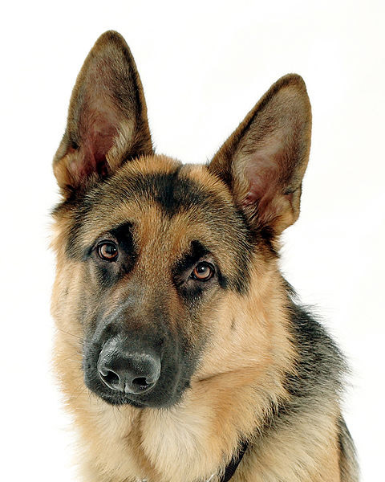

German Shepherd
German Shepherds are working dogs developed originally for herding and tending sheep, and are found in most Breed Standards under Herding Group, Pastoral Group, Working Group, etc. Because of their strength, intelligence, trainability and obedience, German Shepherds around the world are often the preferred breed for many types of work, including search-and-rescue, police and military roles and even acting. German Shepherds are the second-most popular dog in the United States and fourth-most popular in the United Kingdom.
Appearance
German Shepherds are large sized dogs. The breed standard height at the withers is 60–65 cm (24–26 in) for males and 55–60 cm (22–24 in) for females. The weight standard is 30–40 kilograms (66–88 lb) for males and 22–32 kilograms (49–71 lb) for females. The forehead of a German Shepherd is only slightly arched when seen from the front and side, and tapers gradually, without a pronounced stop, to a long wedge-shaped powerful muzzle. The jaws are strong, with a scissor-like bite. The eyes are medium-sized and brown with a lively, intelligent and self-assured look. The ears are large and stand erect, open at the front and parallel, but they often are pulled back during movement. They have a long neck, which is raised when excited and lowered when moving at a fast pace. The tail is bushy on the underside, and forms a slightly curved sabre-shape reaching to the hock when at rest. German Shepherds have a variety of colors, the most common of which are tan/black and red/black. Most color varieties have black masks and black body markings which can range from a classic "saddle" to an over-all "blanket." Rarer colour variations include the sable, all-black, all-white, liver and blue varieties.
Working Dogs
Some popular jobs for German Shepherds are:
- Detection and Holding of Suspects
- Scout Duty
- Search and Rescue
- Narcotics Detection
- Explosive Detection
- Herding
German Shepherds are a popular selection for use as working dogs. They are especially well known for their police work, being used for tracking criminals, patrolling troubled areas and detection and holding of suspects. Additionally thousands of German Shepherds have been used by the military. Usually trained for scout duty, they are used to warn soldiers to the presence of enemies or of booby traps or other hazards. German Shepherds have also been trained by military groups to parachute from aircraft or as anti-tank weapons. They were used in World War II as messenger dogs, rescue dogs and personal guard dogs. A number of these dogs were taken home by foreign servicemen, who were impressed by its intelligence. The German Shepherd is one of the most widely used breeds in a wide variety of scent-work roles. These include search and rescue, cadaver searching, narcotics detection, explosives detection, accelerant detection and mine detection dog, among others. They are suited for these lines of work because of their keen sense of smell and their ability to work regardless of distractions. German Shepherds are still used for herding and tending sheep grazing in meadows next to gardens and crop fields. They are expected to patrol the boundaries to keep sheep from trespassing and damaging the crops.